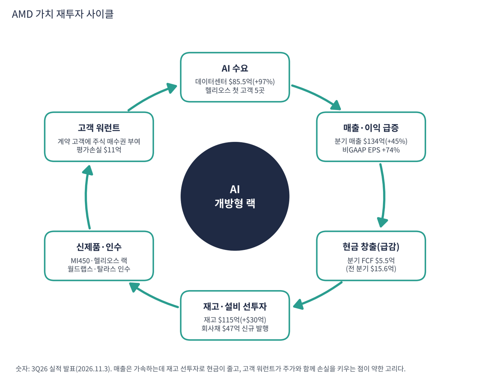

AMD는 PC·서버용 CPU(라이젠·EPYC)와 GPU(라데온·인스팅트), FPGA(자일링스 인수)를 설계하는 반도체 회사다. 공장 없이 TSMC에 생산을 맡긴다. 지금은 AI 데이터센터용 GPU와 서버 CPU가 회사의 중심이고, 엔비디아의 유일한 GPU 맞수로서 랙 단위 경쟁에 들어섰다.
| 항목 | 내용 |
|---|---|
| 종목 | Advanced Micro Devices, Inc. (AMD) · NASDAQ · 반도체 · 1969년 설립 · 본사 캘리포니아주 산타클라라 |
| 시가총액 | 약 $736B · TTM PER 97.6배(GAAP) · 희석 주식 약 16.6억 주 (트레이딩뷰, 11/6 종가 $449.04) |
| 최근 분기(3Q26) | 매출 $13.4B(+45%), 데이터센터 $8.55B(+97%), GAAP 영업이익 $2.83B, 순이익 $2.43B, GAAP EPS $1.46 / 비GAAP EPS $2.09(+74%) |
| 다음 분기 가이던스 | 4Q26 매출 약 $17B ±3%(전년 대비 +66%, 전 분기 대비 +27%), 비GAAP 매출총이익률 약 55% |
| 재무 | 현금·단기투자 $15.8B, 총부채 $7.1B(3분기에 $4.7B 신규 발행) |
| 다음 실적 | 4Q26: 2027년 1월 말 발표 예정 |
| 직책 | 인물 | 역할·특징 |
|---|---|---|
| 회장 겸 CEO | 리사 수 | 2014년 CEO 취임, 파산 위기의 AMD를 서버 CPU 강자로 되살림. 지금은 "초지능 인프라의 전체 스택을 개방형으로 제공"하는 회사를 목표로 제시 |
| CFO | 진 후 | 3Q26에서 "매출 +45%에 비GAAP EPS +74% — 데이터센터 규모 확대가 영업 레버리지를 보여준다"고 설명 |
경영 스타일: '개방형으로 엔비디아에 종속되기 싫은 고객을 모은다'. 대형 고객에게 워런트(주식 매수권)를 주며 공급 계약을 맺어 고객이 AMD의 성공에 직접 이해관계를 갖게 만든다. 인수는 월드랩스(모델 연구)·탈라스(추론 칩)처럼 스택을 채우는 방향이고, 같은 방식으로 ZT 시스템즈의 제조 부문은 정리했다.
MI350에서 MI450으로 세대를 넘기며 GPU와 6세대 EPYC '베니스' CPU를 묶은 헬리오스 랙을 내놨다. 소프트웨어는 CUDA 대안인 ROCm 10이다. 앤스로픽·메타·마이크로소프트·오픈AI·오라클이 첫 헬리오스 랙을 돌린다.
엔비디아가 닫힌 생태계(CUDA·NVLink)로 전 층을 장악한다면 AMD는 개방형을 무기로 한다. 고객이 CPU·GPU 비율을 고르는 헬리온 레퍼런스 아키텍처를 제시한다.
| 분기 | 매출 | YoY | GAAP 매출총이익률 | GAAP 영업이익 | 순이익 | GAAP EPS | 데이터센터 | FCF | 특이 사항 |
|---|---|---|---|---|---|---|---|---|---|
| 2024.4Q | $7.66B | +24% | 51% | $0.87B | $0.48B | $0.29 | $3.86B | $1.09B | |
| 2025.1Q | $7.44B | +36% | 50% | $0.81B | $0.71B | $0.44 | $3.67B | $0.73B | |
| 2025.2Q | $7.69B | +32% | 40% | -$0.13B | $0.87B | $0.54 | $3.24B | $1.18B | MI308 수출 통제 손실 약 $8억 |
| 2025.3Q | $9.25B | +36% | 52% | $1.27B | $1.24B | $0.75 | $4.34B | $1.53B | |
| 2025.4Q | $10.27B | +34% | 54% | $1.75B | $1.51B | $0.92 | $5.38B | $2.08B | |
| 2026.1Q | $10.25B | +38% | 53% | $1.48B | $1.38B | $0.84 | $5.78B | $2.57B | |
| 2026.2Q | $11.54B | +50% | 54% | $1.99B | $2.30B | $1.38 | $6.72B | $1.56B | |
| 2026.3Q | $13.38B | +45% | 54% | $2.83B | $2.43B | $1.46 | $8.55B | $0.55B | 재고·매출채권 급증, 워런트 손실 $11억 |

흐름 요약: 2025년 2분기가 바닥이었다. 대중국 수출 통제로 MI308 GPU 재고 손실(약 $8억)을 반영해 매출총이익률이 40%로 떨어지고 영업적자를 냈다. 이후 MI350 출하와 EPYC 수요로 회복했고 2026년 2분기부터 MI450·헬리오스가 더해져 데이터센터 성장률이 +107%·+97%로 뛰었다. GAAP 숫자에는 큰 잡음이 있다. 3분기 기타비용 $9억은 고객에게 발행한 워런트 공정가치 변동 손실 $11억 때문이다. AMD 주가가 오르면 이 손실이 커진다. 인수 무형자산 상각($5억)도 매 분기 들어간다. 3분기 FCF가 $5.5억으로 급감했다. 매출이 늘었는데 재고(+$30억, $115억)와 매출채권(+$19억)이 급증했기 때문이다. 4분기 헬리오스·베니스 양산을 위한 선제 재고로 볼 수 있지만 확인이 필요하다. 1Q26·1Q25·2Q25 일부 수치는 9개월 누계에서 다른 분기를 빼 계산했다.
| 사업부 | 돈을 버는 방식 | 3Q26 매출 | 성장 | 영업이익 |
|---|---|---|---|---|
| 데이터센터 | 인스팅트 AI GPU(MI350·MI450), 헬리오스 랙, EPYC 서버 CPU(5·6세대 '베니스'), AI NIC, 데이터센터용 FPGA | $8.55B | +97% | $2.88B |
| 클라이언트 | 라이젠 PC CPU(노트북·데스크톱), 라이젠 AI 맥스 | $2.95B | +7% | $0.57B |
| 게이밍 | 콘솔용 세미커스텀 칩(소니·마이크로소프트), 라데온 GPU | $0.77B | -40% | – |
| 임베디드 | 산업·자동차·항공우주·통신용 FPGA·임베디드 프로세서 | $1.11B | +29% | $0.45B |

AMD는 1년 만에 'PC 회사'에서 '데이터센터 회사'가 됐다. 1년 전 데이터센터 비중은 47%였는데 지금은 64%다. 사업부 영업이익 합계 $3.9B 중 데이터센터가 $2.9B(74%)이고 이익률은 34%로 1년 전(25%)보다 9%p 올랐다. 게이밍의 급감은 의도된 결과에 가깝다. 콘솔 사이클 후반부로 세미커스텀 매출이 줄었고 같은 TSMC 생산능력을 데이터센터 GPU에 우선 배분한다. PC CPU는 +7%로 견조하지만 메모리 가격 상승에 따른 PC 수요 둔화가 위험 요인이다. 데이터센터 안의 GPU·CPU 구분은 공개되지 않는다.
리사 수 CEO가 그리는 AMD의 목표는 "초지능 인프라의 전체 스택을 개방형으로 제공하는 회사"다. 3Q26 발표문의 하이라이트는 거의 전부 이 문장으로 정리된다.
| 층 | AMD가 하는 일 (3Q26 발표 기준) |
|---|---|
| 랙 시스템 | 헬리오스: MI450 GPU + 6세대 EPYC CPU를 묶은 랙. 앤스로픽·메타·마이크로소프트·오픈AI·오라클이 첫 시스템 운영. HPE가 '헬리오스 by HPE'로 판매 |
| 설계도 | 헬리온 레퍼런스 아키텍처: 고객이 워크로드에 맞게 CPU·GPU 비율을 고르는 개방형 에이전틱 랙 설계 |
| 소프트웨어 | ROCm 10: CUDA의 대안. AI 네이티브 개발 환경 |
| 모델 연구·추론 칩 | 월드랩스(모델 연구)·탈라스(특화 추론 실리콘) 인수 합의 |
| 엣지·PC | 라이젠 AI 헤일로(로컬 AI 개발), 스레드리퍼 헤일로 스테이션 |


위: 트레이딩뷰 주봉 데이터로 재구성(10·20·40주선). 아래: 트레이딩뷰 공개 차트 일봉 캡처(작도 숨김, 이동평균선·볼린저밴드만 표시).
| 이동평균 | 값 | 종가 대비 | 해석 |
|---|---|---|---|
| 5일선 | $458.59 | -2.1% | 11/5 -17.3%, 11/6 +11.0% |
| 20일선 | $527.30 | -14.8% | 10월 중순 이후 하락 전환 |
| 50일선 | $546.81 | -17.9% | 9~10월 급등의 중심 |
| 100일선 | $526.91 | -14.8% | 20일선과 겹침, $527~547 저항대 |
| 200일선 | $415.98 | +7.9% | 11/5 장중 $402까지 밀렸다 회복 |
배열은 50일 > 20일 ≈ 100일 > 5일 > 주가 > 200일이다. 2026년 3월 저점($188)에서 4~6월 AI GPU 기대로 $580대까지 3배, 9월 MI450 출시와 함께 $659(10/6)까지 신고가, 이후 한 달 동안 -39%(11/5 장중 $402)까지 밀렸다. 11월 3일 실적은 가이던스 상단을 넘었지만 11/5 반도체 동반 급락에 하루 -17%를 기록했고 11/6에 +11.0% 반등했다.
| 규칙 | 기준 | 현재 값 | 신호 |
|---|---|---|---|
| 장기 추세 필터 | 종가 vs 200일선 | $449.04 > $415.98 | 매수 |
| 중장기 교차 | 50일선 vs 200일선 | $546.81 > $415.98 | 매수 |
| 단기 교차 | 20일선 vs 50일선 | $527.30 < $546.81 | 매도 |
| 돈키언 채널 | 55일 고가 $658.52 / 저가 $402.10 | 중간값 $530.31 아래 | 매도 |
| 1개월 모멘텀 | 21거래일 수익률 | -27.7% (기준 $620.68) | 매도 |
| 3개월 모멘텀 | 63거래일 수익률 | -4.4% (기준 $469.56) | 매도 |
| 6개월 모멘텀 | 126거래일 수익률 | -1.4% (기준 $455.19) | 매도 |
| 12개월 모멘텀 | 252거래일 수익률 | +75.2% (기준 $256.33) | 매수 |
| 종합 (8개 평균) | -0.25 | 매도 우위 |
해석: 신호가 거의 반으로 갈렸다. 장기 신호(200일선·50/200·12개월)는 매수, 단기·중기는 매도다. 3개월(-4.4%)·6개월(-1.4%) 모멘텀은 기준가와 차이가 작아 $470만 넘으면 두 신호가 매수로 바뀌어 종합이 플러스가 된다. 변동성이 매우 커서(14일 ATR $38.02 (8.5%)) 하루 ±$40이 보통이다.
| 가격 | 무엇이 바뀌나 | 의미 |
|---|---|---|
| $455 ~ 470 | 6개월·3개월 기준가 | 2개 매수 전환 → 종합 플러스 |
| $527 ~ 547 | 20·100·50일선 | 단기 추세 회복 |
| $416 | 200일선 | 이탈 시 장기 추세 필터 매도 → 종합 하락 |
| $402 이탈 | 55일 저점 붕괴 | 피보나치 50%($423) 이탈 확인, $368까지 열림 |
| 구분 | 가격대 | 근거 |
|---|---|---|
| 저항 2 | $527 ~ 547 | 20·50·100일선 |
| 저항 1 | $470 ~ 489 | 3개월 기준가, 11/4 종가 $489 |
| 지지 1 | $402 ~ 423 | 200일선($416), 11/5 저점, 피보나치 50%($423) |
| 지지 2 | $368 | 3월 저점 → 10월 고점 피보나치 61.8% |
성장 가속 + 장기 추세 유지 + 단기 과매도다. 200일선을 지키는 한 '상승 추세 안의 급한 조정'으로 본다. 다만 PER이 높아 변동성이 크고 손절 원칙이 더 중요하다. $430~449에서 계획 비중의 30%, $402~416에서 20%를 진입하고(평균 $428·손절 $385 기준 손익비 1:1.4~1:2.6), $470 종가 회복 시 나머지 50%를 추가하며 손절을 $416으로 올린다. 1차 $489에서 40%, 2차 $527~547에서 40% 익절하고 나머지는 $659 재도전 여부로 판단한다. $416 종가 이탈 시 비중을 줄이고 $385에서 손절한다.
| 악재 요인 | 내용 | 강도 |
|---|---|---|
| 엔비디아 | 매출 7배 규모, CUDA 생태계, 베라 루빈 전면 양산, 공급 약정 $279B로 부품 선점 | 높음 |
| 공급 제약 | TSMC 첨단 공정·CoWoS, HBM 메모리 공급(발표문 위험 요인에 명시) | 중간~높음 |
| 고객 워런트 | 주가가 오르면 GAAP 손실이 커지고 희석 가능성. 계약 조건 세부 공개 제한 | 중간 |
| 현금흐름 | 재고·매출채권 급증으로 3분기 FCF $5.5억 | 중간 |
| 높은 밸류에이션 | GAAP PER 97.6배, 비GAAP 약 54배로 성장 전제 의존 | 중간 |
| 수출 통제 | 2025년 MI308 손실 사례. 중국 매출 재개 불확실 | 참고 |
| 티커 | 회사 | 시가총액 | PER(TTM) | PEG | P/S | EPS 성장(YoY) |
|---|---|---|---|---|---|---|
| AMD | AMD | $736B | 97.6배 | 0.68 | 14.50배 | +127% |
| NVDA | 엔비디아 | $4,498B | 23.6배 | 0.20 | 15.63배 | +125% |
| AVGO | 브로드컴 | $1,402B | 37.5배 | 0.34 | 14.81배 | +100% |
| TSM | TSMC | $1,630B | 24.2배 | 0.39 | 12.03배 | +59% |
| MRVL | 마벨 | $124B | 46.5배 | – | 12.57배 | – |
| QCOM | 퀄컴 | $177B | 13.0배 | 0.08 | 3.97배 | +160% |
EPS 성장률은 트레이딩뷰 TTM 값이다. 마벨은 직전 연도 기저로 산출되지 않는다.
비교 결론: AMD의 PER 97.6배는 비교 종목 중 가장 높다(엔비디아 23.6배, TSMC 24.2배, 브로드컴 37.5배, 마벨 46.5배). PEG 0.68은 브로드컴(0.34)·엔비디아(0.20)·TSMC(0.39)보다 비싸다. 같은 AI 공급망에서 가장 비싼 가격을 받는 종목이라 실적이 조금만 실망해도 주가 변동이 가장 크게 나타난다(11/5 하루 -17%).
AMD는 적자 기업이 아니다. 영업이익이 흑자이고 순현금도 있다. 그러나 최근 분기 FCF가 급감했으므로 재고 선투자가 현금을 얼마나 먹는지를 점검했다.
| 지표 | 값 | 계산·출처 | 해석 |
|---|---|---|---|
| 최근 4분기 FCF | +$67.6억 | 2025.4Q~2026.3Q 합계 (트레이딩뷰 $71억) | TTM은 플러스지만 최근 두 분기는 $15.6억 → $5.5억으로 감소 |
| 분기 FCF | $0.55B | 영업현금 $1.20B - 설비 $0.65B | 설비투자가 분기 $0.26B(2025.3Q)에서 $0.65B로 늘어남 |
| 현금·단기투자 / 총 부채 | $15.8B / $7.1B | 3분기에 $4.7B 신규 발행 | 순현금 약 $8.7B, 순현금/EBITDA 0.8배 |
| 재고 | $11.5B (+$3.0B) | 3분기 증가분 | 4분기 양산용 선제 재고(회사 설명), 4분기 매출로 전환되는지가 확인점 |
| 매출채권 | +$1.9B | 3분기 증가분 | 랙 단위 판매로 대금 회수 기간이 길어질 수 있음 |
| 가정 | 연간 FCF | 의미 |
|---|---|---|
| 3분기 FCF($0.55B) 연율화 | 약 $2.2B | 순현금 $8.7B 대비 부담 없음, 그러나 TTM($6.8B)의 1/3 |
| FCF 50% 감소 (가정) | 약 $3.4B | 순현금과 현금 $15.8B로 충분히 감내 |
연율화와 50% 감소는 내가 둔 점검 가정이다.
| 기준 | 매출 | P/S | 비고 |
|---|---|---|---|
| 트레이딩뷰 표시값(11/6 환산) | – | 14.5배 | 산출 기준 차이 |
| 최근 4분기(TTM) | $454억 | 16.2배 | 시총 $736B ÷ $454억 |
| 4Q26 가이던스 연율화 | $680억 | 10.8배 | $17B × 4 (가정) |
| 동종 AI 반도체 | – | – | 엔비디아 14.8, 브로드컴 14.8, 마벨 12.6, TSMC 12.0, 퀄컴 4.0 |
해석: TTM 기준 16.2배는 동종 중 가장 높다. 영업이익률이 21%(GAAP)로 엔비디아·브로드컴보다 낮아 같은 P/S에서 이익의 질이 약하다. 가이던스대로 매출이 늘면 10.8배로 내려오지만 이 숫자는 가이던스 달성이 전제다.
| 지표 | 값 | 판정 |
|---|---|---|
| EBITDA (트레이딩뷰, TTM) | $111억 | 흑자 |
| GAAP 영업이익 (TTM) | $80.5억 | 2025.4Q~2026.3Q 합계 |
| 영업이익 → EBITDA 차이 | 약 $30억 | 인수 무형자산 상각 등 감가상각비 |
| EBITDA 마진 | 24% | $111억 ÷ $454억 |
| 순현금 / EBITDA | 0.8배(순현금) | 현금 $15.8B > 부채 $7.1B |
GAAP 이익률이 낮은 이유는 인수 무형자산 상각과 워런트 손실이다. 비GAAP 영업이익률(약 29%)이 본업 수익력에 더 가깝다.
| 방식 | PER | EPS 성장률 | PEG | 판정 |
|---|---|---|---|---|
| 트레이딩뷰 (TTM, 11/6 환산) | 97.6배 | +127.4% | 0.68 | 투자 적격 |
| 직접 계산 (SEC GAAP 분기 EPS 합계) | 97.6배 ($449.04 ÷ $4.60) | +128% ($2.02 → $4.60) | 0.76 | 투자 적격 |
| 비GAAP 분기 연율화 (추정) | 약 53.7배 ($449.04 ÷ $8.36) | +74% (3Q26 비GAAP EPS 성장) | 약 0.73 | 투자 적격 |
| 보수적 (성장률 30% 가정, 비GAAP PER) | 약 53.7배 | +30% | 1.79 | 기준 초과 |
판정: PEG 0.68~0.76 → '투자 적격'(1.0 이하)이고 '적극 매수'(0.5 이하)에는 못 미친다. GAAP EPS가 워런트 손실·상각으로 작게 잡혀 PER 97.6배라는 높은 숫자가 나오고, 성장률은 2025년 2분기 MI308 손실 기저 효과로 부풀려져 있다. 비GAAP으로 보면 PER은 약 54배이고 PEG는 0.73으로 비슷하다. 성장률이 30%로 낮아지면 1.79로 1.0을 크게 넘는다. 이번 보고서 종목 중 PER 절대값이 가장 높아 '성장이 계속된다'는 전제의 비중이 가장 큰 종목이다. 비GAAP 연율화는 3분기 비GAAP EPS $2.09를 4배한 내 추정이다.

AMD 사이클의 엔진은 엔비디아 외의 두 번째 공급원을 원하는 AI 고객이다. 그러나 엔비디아와 달리 번 돈이 빠르게 늘지 않는 상태에서 재고·인수·워런트로 재투자한다. 매출이 가속하는 동안 현금이 줄어드는 점이 이 사이클의 특징이다.
| 고리 | 현재 숫자 | 고리 강도 | 약해지는 신호 |
|---|---|---|---|
| ① AI 수요 | 데이터센터 $8.55B(+97%), 헬리오스 첫 고객 5곳 | 강함 | 헬리오스 양산 지연, 4Q 가이던스 하회 |
| ② 매출·이익 | 매출 $13.4B(+45%), 비GAAP EPS +74%, 4Q 가이던스 $17B | 강함 | GPU 비중 확대로 매출총이익률 55% 하회 |
| ③ 현금 창출 | 분기 FCF $5.5억(전 분기 $15.6억) | 약함 | 재고·매출채권이 매출로 전환되지 않음 |
| ④ 재고·설비 선투자 | 재고 $11.5B, 회사채 $4.7B 신규 발행 | 확대 | HBM·CoWoS 공급 제약 |
| ⑤ 신제품·인수 | MI450·헬리오스, 월드랩스·탈라스 | 진행 중 | ROCm 생태계 확산 속도 |
| ⑥ 고객 워런트 | 계약 고객에 주식 매수권, 평가손실 $11억 | 주의 | 주가 상승 시 GAAP 손실·희석 확대 |
구조: ①·②가 강하고 ③이 가장 약한 고리다. 4분기에 재고와 매출채권이 매출·현금으로 전환되는지가 사이클의 건강성을 가른다.